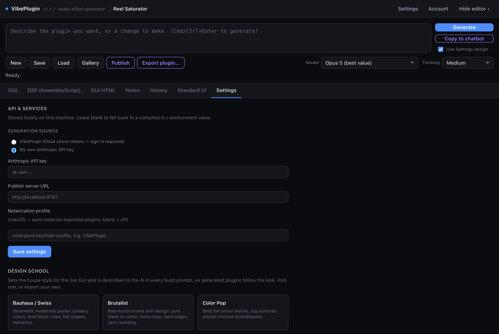
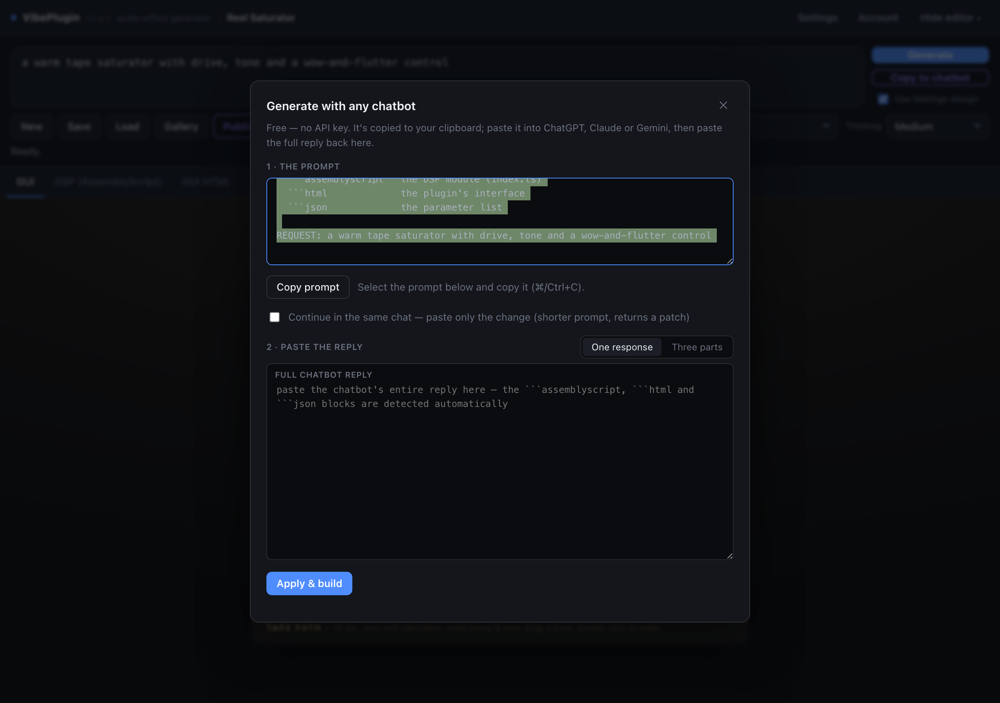

The three ways to generate
VibePlugin itself is free and open source. What can cost money is the AI that writes the plugins — and even that is optional. There are three routes, and you pick between them with the Model dropdown in the toolbar and the Generation source setting.
Your own Anthropic key
One-click generation. Requests go straight from the plugin to Anthropic.
Any chatbot you already use
Copy a prompt out, paste the reply back. No key, no account, no signup.
VibePlugin Cloud credits
One-click generation with no API key to manage. We run it on our key.
If you already have an Anthropic API key, use route 1. If you don't, try route 2 first — it's free and complete. Route 3 exists only for people who want neither a key nor the copy-paste step.
What's in the Model dropdown
The dropdown shows the models for whichever generation source is selected in Settings. These are the options:
There is also a Thinking control next to it. More thinking gives better results on complicated plugins and costs more; Medium is a sensible default. Big, elaborate interfaces are worth generating with the strongest model.
Route 1 · Your own Anthropic API key
The most direct option if you already have an Anthropic account. The plugin talks to Anthropic directly and you're billed by them for exactly what you use.
-
Get a key
Create one at console.anthropic.com. It looks like
sk-ant-…. You'll need some credit on that Anthropic account. -
Open Settings and paste it in
Set Generation source to My own Anthropic API key, paste the key into the Anthropic API key field, and press Save settings. The key is stored locally on your machine and never sent anywhere except Anthropic.

Settings ▸ API & Services. Pick the generation source at the top, then paste your key. The design schools further down the same tab set the house style for generated interfaces. -
Pick a model and generate
The Model dropdown now lists the Anthropic models. Type a prompt and press Generate. That's the whole loop from now on.
Route 2 · Any chatbot, completely free
This route needs no API key and no account. VibePlugin writes the prompt for you; you paste it into whatever AI chat you already use — ChatGPT, Claude, Gemini, anything — and paste the reply back. Every feature of the plugin works this way.
-
Type your description, then press Copy to chatbot
A dialog opens with a complete, self-contained prompt already built from your description and copied to your clipboard.

The chatbot dialog. Step 1 holds the prompt (already copied); step 2 is where the reply goes. One response is the normal mode — Three parts is for chatbots that split long answers up. -
Paste it into your chatbot
Open a new conversation and paste. The prompt tells the model exactly what to produce: three fenced code blocks — the audio code, the interface, and the parameter list. Let it finish completely; these replies are long.
-
Copy the whole reply back
Select the entire response and paste it into the big box in the dialog. You don't need to pick the code blocks out yourself — VibePlugin finds them. If your chatbot cut the answer into pieces, ask it to continue and use the Three parts mode to paste each block separately.
-
Press Apply & build
VibePlugin extracts the code, compiles it, and loads the plugin — exactly as if it had called an API. If the code doesn't compile, the dialog shows the error and gives you a Copy fix request button: paste that back into the same conversation, paste the new reply, and try again.
Route 3 · VibePlugin Cloud credits
The convenience option: one-click generation, no API key to create or manage. Your requests run on our key and are billed against a prepaid credit balance.
-
Click Account and sign in
The Account button is in the top-right of the plugin window. Create an account or sign in to an existing one. Your remaining credits are then shown in the header, next to the button.

The Account dialog: sign in, check your balance, and buy credits. -
Buy credits
With an empty balance, Buy credits opens a checkout page. Pick a pack and pay; your balance updates against the email you signed up with.
-
Choose a Cloud · model and generate
Set Generation source to VibePlugin Cloud in Settings, then pick one of the Cloud · entries in the Model dropdown. Generate as normal.
What a generation actually costs
It is not a subscription and not a flat fee per prompt. You buy a balance up front, and each generation costs an amount based on how much work the AI actually did — how long the code and interface came out, and how much the model had to think.
| What | Roughly |
|---|---|
| 1 credit | $0.01 |
| A complete plugin on the standard model | about $0.15 – $0.40 (15–40 credits) |
| A small edit ("make the tone darker") | considerably less |
| Opus 4.8, the strongest model | a few times more |
| Haiku 4.5, the cheapest | roughly half |
After every generation the plugin tells you exactly what it charged and what your balance is, so you're never guessing. If you run out, generation pauses until you top up — plugins you already made keep working, and so does everything else in the app.